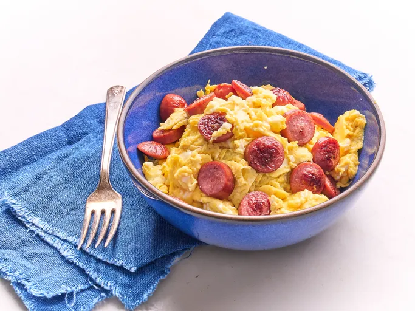

Ingredients
- 1/2 tablespoon butter
- 1 hot dog, cut into 1/2-inch slices
- 1 large egg
- 1/4 teaspoon kosher salt
- 1/8 teaspoon freshly ground black pepper
Instructions
- Melt butter in a small nonstick skillet over medium heat.
- Add hot dogs and cook until browned on all sides, about 2 minutes.
- Turn heat to down to medium-low.
- Whisk eggs with salt and pepper until well blended and pour over hot dogs.
- Cook, stirring constantly until eggs are set.
- Serve immediately.